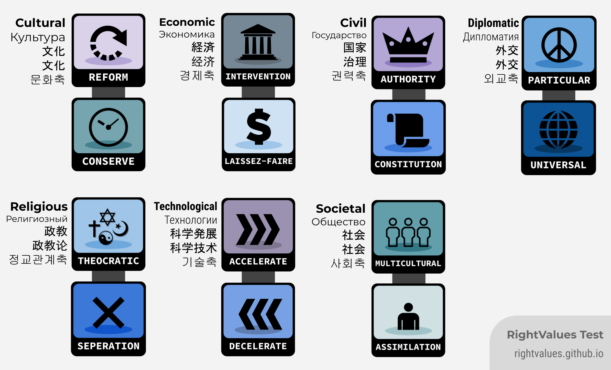

RightValues

Rightvalues is a quiz for the people on the right of the spectrum, based upon and serves as the alternative to the LeftValues quiz. If you are not a rightist, this quiz is obviously not suited for you, and you should look for the LeftValues instead. You will be presented with a statement, and then you will answer with your opinion on the statement, from Strongly Agree to Strongly Disagree, with each answer slightly affecting your scores. At the end of the quiz, your answers will be compared to the maximum possible for each value, thus giving you a percentage. Answer honestly!
There are 70 questions in the generic main test.
What are the values?
There are currently six axes, each of which has two opposing values. They are:
Reform vs. Conserve (Cultural)
This is Liberal vs Conservative in other words. The Cultural Left is left-wing culturally, supporting things like LGBTQ rights and Abortion. The Cultural Right wants to preserve culture and usually do not support the legalization of weed or abortion.
Intervention vs. Laissez-Faire (Economic)
Those with a higher Intervention score tend to want the government to regulate the economy. Those with a higher Laissez-Faire tend to reject such measures and value free-market economy.
Dictatorship vs. Constitution (Civil)
Those with a higher dictatorship score tend to favour a dictator with less restrictions. Those who have a higher constitution score support a constitution, with the extreme having little to no government, but with a nation-wide constitution (NAP).
Particular vs. Universal (Diplomatic)
Those with a higher particular score tend to want things as they are, and focus internally to avoid conflict. Those with a higher Universal score tend to want to topple corrupt regimes or nations, for reasons of benefiting the nation, or the benefit of the people internationally.
Theocracy vs. Seperation (Political Theism)
Those with a higher Theocracy score tend to want a theocratic government, where religious organizations make political decisions. Those with a higher Seperation score tend to want a seperated Church from the state. This does not correlate to a person's religious beliefs.
Decelerate vs. Accelerate (Technological)
Those with a higher Decelerate score tend to want a slower technological progress, and wants to conserve the current or past way of living. Those who score higher in Investment tend to think that acceleration brings many benefits to the market.
Race vs. Equality (Societal)
Those with a higher Race score think each race has different roles, strengths, and weaknesses. Those with a higher Equality score think race is not important, and we should see people at their character more than their race.
Similar to 8values, this quiz will attempt to match you with a specific rightist ideology, which is shown in the "Closest Match" section.
Please remember that you are not intended to get a 100% score in any of the categories. The point of the quiz is to challenge your views.
If you have any suggestions or constructive criticism please fill out this short form.
8values is licensed under the MIT License, which permits "without restriction" the rights to "use, copy, modify, merge, publish, distribute, sublicense, and/or sell
copies of the Software". LeftValues is licensed under the MIT License, which permits "without restriction" the rights to "use, copy, modify, merge, publish, distribute, sublicense, and/or sell
copies of the Software". RightValues is thus able to legally modify the original 8values without infringing on any copyright. RightValues is based on LeftValues and 8Values.
Rightvalues это тест для людей правых взглядов, основанный на LeftValues. Это викторина, которая пытается определить вашу позицию в спектре правых, как альтернатива LeftValues. Если вы не правый, эта викторина, очевидно, вам не подходит, и вам следует вместо этого пройти LeftValues. Вам будет представлен тест, а затем вы ответите своим мнением по поводу утверждения, от полностью согласен до полностью не согласен, причем каждый ответ немного влияет на ваши результаты. В конце викторины ваши ответы будут сравниваться с максимально возможным для каждой идеологии, что даст вам процентное значение. Отвечайте честно!
Как тест определит мои взгляды?
В настоящее время существует шесть осей, каждая из которых имеет два противоположных мнения:
реформирование vs. традиционализм (Культура)
Другими словами, это либерализм против консерватизма. Культурные левые поддерживают такие вещи, как ЛГБТ и аборты. Культурно правые хотят сохранить культуру и обычно не поддерживает легализацию наркотиков и аборты.
Вмешательство» vs. Невмешательство (Экономика)
Те, у кого более высокий балл «Вмешательство», как правило, хотят, чтобы государство регулировало экономику. У кого более высокий показатель "Невмешательства" выступают за свободный рынок и минимальное вмешательство государства
Диктатура vs. Конституция (Государство)
Те, у кого больше очков диктатуры, склонны отдавать предпочтение диктатору, который не имеет каких либо ограничений. Те, у кого более высокий балл по конституции, поддерживают конституцию, а крайние - практически без правительства, но с общенациональной конституцией (NAP ).
Частный vs. Универсальный (Дипломатия)
Те, у кого более высокий "частный" балл, склонны сосредотачиваются внутри своей страны, чтобы избежать конфликта. Те, у кого более высокий универсальный балл, как правило, хотят свергнуть коррумпированные режимы или нации из соображений выгоды нации или блага людей во всем мире.
Теократия vs. Отделение (Политический Теизм)
Те, кто имеет более высокий балл теократии, склонны хотеть теократического правительства, при котором религиозные организации принимают политические решения. Те, у кого более высокий балл "отделение", как правило, хотят отделить Церковь от государства. Это никак не соотносится с религиозными убеждениями человека. .
Замедление vs. Ускорение (Технологии)
Те, у кого выше показатель замедления, склонны к более медленному техническому прогрессу и хотят сохранить текущий или прошлый образ жизни. Те, кто набирает более высокие баллы по "ускорению", склонны думать, что ускорение приносит обществу много преимуществ
Раса vs. Равенство (Общество)
Те, у кого больше очков "Раса", думают, что этносы отличаются друг от друга, имея при этом сильные и слабые стороны. Те, у кого выше показатель Равенства, думают, что раса не важна, и мы должны судить людей по их характеру.
Подобно 8values, эта викторина будет пытаться сопоставить вас с определенной правой идеологией. В настоящее время существует 36 идеологий, и их будет еще больше. Предложения очень приветствуются.
Please remember that you are not intended to get a 100% score in any of the categories. The point of the quiz is to challenge your views.
Если у вас есть предложения или конструктивная критика, заполните эту форму
или же, напишите переводчику в телеграм, если у вас есть претензии к переводу. @ladomir37
8values находится под лицензией MIT License, которая разрешает «без ограничений» права на «использование, копирование, изменение, объединение, публикацию, распространение, сублицензирование и / или продажу
копий Программного обеспечения ». LeftValues находится под лицензией MIT License, которая разрешает« без ограничений »права на« использование, копирование, изменение, объединение, публикацию, распространение, сублицензию и / или продажу
копии программного обеспечения ». RightValues, таким образом, может на законных основаниях изменять исходные 8values без нарушения каких-либо авторских прав. RightValues основывается на LeftValues и 8Values.
Translated by: LadomirXlebnikov
RightValuesとは、 LeftValuesから着想を得た、右派／右翼向け政治診断です。右のなかでも、あなたがどのような価値観をもっているのか診断します。 左寄りの方は正しい結果が得られませんので、LeftValuesをご利用ください。この診断では、表示される各文に対してどう考えるか、「つよく同意する」から「まったく同意しない」の範囲より答えていただきます。選択に応じてスコアがつけられ、最後まで回答すると、それぞれの価値観について取り得る最大スコアを100％とした確率が表示されます。正直にお答えください！
質問は、全部で70問あります。
診断結果について
診断は、次に示す6つの「主軸」に基づいて下されます。各主軸は、対極の価値観同士を端に配置してあります。
進歩 vs. 保守 (「文化」軸)
あなたがリベラルか、保守かを表します。一方、「進歩」のスコアが高い方は、社会を革新させようとする政策や価値観を支持する傾向にあります。「進歩」寄りの方は文化左翼的な思想をもち、LGBTQの権利や人工妊娠中絶が合法であることを支持する傾向にあります。一方、「保守」寄りの方は伝統をまもることを重視し、大麻の解禁や中絶の権利の合法化に否定的な傾向があります。
介入 vs. 放任 (「経済」軸)
「介入」のスコアが高い方は、政府が経済へ介入・干渉することに賛成します。「放任」派の方は、これらのことに否定的です。
専制 vs. 憲法 (「国家」軸)
「専制」寄りの方は、支配者の権利拡大に好意的です。一方、「憲法」寄りの方は支配層が憲法に制限されることを、さらに場合によっては他者の権利侵害を規制する基本原則（不可侵原則; Non-aggression principle）を前提とした無政府体制を、支持します。
自国 vs. 世界 (「外交」軸)
「自国」のスコアが高い方は、他国の政策への介入に反対し、国内の問題解決や治安維持を望みます。一方、「世界」寄りの方は、自国ないしは国際社会のために、腐敗した政権や国家の転覆および廃止を積極的に望みます。
融合 vs. 分離 (「政教」軸)
「融合」派の方は宗教団体による政治ないし政権を求めます。「分離」のスコアが高い方は、政教分離を強く求める傾向にあります。なお、この軸は個人の宗教観とは独立して判断されます。
減速 vs. 加速 (科学発展)
「減速」の方は科学や技術の発展を減速させ、現在や過去の文化を維持することに賛成します。「加速」派の方は、投資などを通して発展を促進させることを支持します。また、科学発展は市場へ利益があると考える場合も多くあります。
民族 vs. 平等 (社会)
「民族」のスコアが高い方は、各民族には各民族の強みや弱みがあると考え、それに基づいた役割分担を支持する傾向にあります。「平等」のスコアが高い方は、人種や民族という概念に強い意味を見いださず、個人の性格をより重視すべきであると考える傾向にあります。
LeftValuesでは、発想元の8valuesやLeftValues
と似たように、あなたの回答に最も近い思想を診断します。現在36種類の思想が登録されており、順次拡大予定です。ご提案がありましたら、お気軽にご連絡ください。
いずれの軸についても、この診断では100％をとる必要はありません。ご自身の価値観を把握し、問い直すためにご活用ください。その上で、改善に役立つご批判やご提案がございましたら、 こちらのメールフォームにてご連絡ください（英語推奨）。
8valuesはMIT Licenseに基づいてライセンスされており、「無制限("without restriction")」に、「ソフトウェアの複製を使用、複写、変更、結合、掲載、頒布、サブライセンス、および/または販売する ("use, copy, modify, merge, publish, distribute, sublicense, and/or sell copies of the Software")」権利が認められています。
従って、LeftValuesは著作権を侵害することなく、適法的に8valuesへ変更を加えています。また、LeftValuesも同MIT Licenseを適用しています。RightValuesはLeftValues基にして制作されました。
Translated by: Choux
RightValues是基于LeftValues， 针对右派人士的一项测验，旨在确定您在右派人士上的定位。 如果您是左派人士，那么此测验显然不适合您，您应该寻找LeftValues。
系统将为您提供一个陈述，然后对陈述做出回答，从“ 非常同意”到“非常不同意”, 每个答案都会稍微影响您的分数。 测验结束时，您的答案将与每个值的最大可能值进行比较，从而得出一个百分比。
有70道题在此测试中。
这些意识形态都有哪些？
当前一共有七个坐标轴，其各自代表了一对相反的意识形态。它们是：
改革 与 保守 (文化)
换句话说，这就是自由主义与保守主义。自由主义在文化上是激进的，支持LQBT+群体和堕胎之类的事物合法。保守主义希望维护传统，通常不支持毒品或堕胎的合法化。
计划经济 与 市场经济 (经济)
计划经济得分较高的人倾向于希望政府调控经济。市场经济得分较高的人倾向于市场自我调节经济。
精英 与 法治 (治理)
精英得分较高的人倾向于支持较少的精英治理国家。法治得分较高的人支持依据一套法律体系治理国家，极端的甚至是无政府主义者，只依据一套全国性的法律体系治理国家。
特殊主义 与 普遍主义 (外交)
特殊主义得分较高的人倾向于保持现状，并在内部集中精力避免冲突。 普遍主义得分较高的人倾向于为了国家或国际人民的利益推翻腐败的政权或国家。
政教合一 与 政教分离 (政教论)
政教合一得分较高的人倾向于神权政府，由宗教组织执政。政教分离得分较高的人倾向于宗教与国家分离。这与个人的宗教信仰无关。
保守 与 激进 (科学技术)
减速得分较高的人倾向于希望技术进步较慢，并希望保持目前或过去的生活方式。激进得分较高的人倾向于认为加速会给市场带来很多好处。
种族优越论 与 种族平等 (社会)
种族优越论得分较高的人认为每个种族都有不同的角色、优势和劣势。种族平等得分较高的人认为种族无差别，人们应该更多地看到人们的性格而不是种族。
类似于8values，该测验将尝试使您符合特定的右派意识形态。当前有36种意识形态，还有更多的意识形态欢迎你的建议。请记住，您无意在任何类别中获得100％的分数。测验的目的是挑战您的观点。如果您有任何建议或建设性的批评，请在GitHub上讨论或创建Issues。
此测试仅用于学术研究（如社科），测验中的任何内容不代表翻译者的政治立场。除Google Analytics外，我们不会收集任何个人信息，也不会保存答案或结果。如果你不相信这一点，本项目的开源代码对所有人开放查阅，欢迎查看。
8values 是采用 MIT 许可证授权的，该许可证“无限制地”授予“使用、复制、修改、合并、发布、分发、再授权和 / 或出售软件的副本”的权利。
因此，LeftValues 能够在不侵犯任何版权的情况下合法地修改原始的 8values。同理，RightValues也能在不侵犯任何版权的情况下合法地修改 LeftValues，翻译者Songyon也能在不侵犯任何版权的情况下合法地翻译RightValues
Translated by: Songyon
Rightvalues는 LeftValues의 대안으로 우익 스펙트럼 상에서 당신의 위치를 파악하기 위해 LeftValues를 바탕으로 만들어진 우익 설문입니다. 만약 당신이 우파가 아니라면, 이 설문은 분명 당신에게 적합하지 않습니다. 대신 LeftValues를 찾으세요. 각 문항을 살펴보고 적극 동의부터 동의, 중립/모르겠다, 비동의, 적극 비동의까지의 답변중 하나를 선택하면, 각각의 답변이 당신의 점수에 조금씩 영향을 주게 될 것입니다. 설문 마지막에 당신의 답변에 기초한 점수가 각각의 가치(values)에 대해 가질 수 있는 최대값에 대한 백분율로 표시됩니다. 최대한 정직하게 대답하세요!
질문은 총 70 문항이 있습니다.
가치(values)는 무엇인가요?
현재 6개의 축이 있습니다. 각각의 축은 아래와 같은 상반되는 두 개의 가치를 갖게 됩니다.:
개혁 대 보존 (문화축)
이것은 자유주의 대 보수주의와 같은 의미입니다. 개혁 점수가 높은 사람들은 문화적으로 좌익이며 LGBTQ의 권리와 낙태와 같은 것들을 지지합니다. 보존 점수가 높은 사람들은 문화를 보존하기를 원하며 보통 대마나 낙태의 합법화를 지지하지 않습니다.
시장개입 대 자유방임 (경제축)
시장개입 점수가 높은 사람들은 정부가 경제를 규제하기를 선호하는 경향이 있습니다. 자유방임 점수가 높은 사람들은 그러한 조치를 거부하고 자유 시장 경제에 가치를 두는 경향이 있습니다.
독재 대 분권 (권력축)
독재 점수가 높은 사람들은 통치자의 권리 확대에 긍정적입니다. 분권 점수가 높은 사람들은 지배층이 분권 되는 것에 긍정적이며 극단적으로는 타인의 권리 침해를 규제하는 기본 원칙 (불가침 원칙; Non-aggression principle)을 전제로 한 무정부 체제를 지지합니다.
자국주의 대 국제주의 (외교축)
자국주의 점수가 높은 사람은 다른 나라의 정책 개입에 반대하고 국내 문제 해결과 치안 유지를 바랍니다. 한편, 국제주의 점수가 높은 사람은 자국 내지는 국제사회를 위해 부패한 정권이나 국가의 전복 및 폐지를 적극적으로 지지합니다.
신정주의 대 세속주의 (정교관계축)
신정주의 점수가 높은 사람들은 종교 단체에 의한 정치 내지 정권을 선호하는 경향이 있습니다. 세속주의 점수가 높은 사람들은 정교 분리를 요구하는 경향이 있습니다. 이것은 개인의 종교적 신념과 관련이 없습니다.
기술 발달 감속 대 기술 발달 가속 (기술축)
기술 발달 감속 점수가 높은 사람들은 기술 발전이 더딘 것을 선호하는 경향이 있으며 현재 또는 과거 생활 방식을 보존하고자 합니다. 기술 발달 가속 점수가 높은 사람들은 가속이 시장에 많은 이점을 가져다 준다고 생각하는 경향이 있습니다.
인종주의 대 평등주의 (사회축)
인종주의 점수가 높은 사람들은 각 인종이 다른 역할, 장점 및 약점을 가지고 있다고 생각합니다. 평등주의 점수가 높은 사람들은 인종이 중요하지 않다고 생각하고, 인종보다 그들의 성격에 더 맞는 사람들을 보아야 한다고 생각합니다.
8Values, LeftValues와 비슷하게, 이 설문은 특정한 우파 이념과 당신을 짝지으려 할 것입니다. 현재 36개의 가능한 이념이 있고, 미래에는 더 많은 이념들이 있을 수 있습니다. 이는 진행중인 작업이며, 의도한대로 작동하지 않을 수도 있습니다. 제안은 언제나 환영합니다.
어떠한 범주에서든 100% 의 점수를 얻을 수 없다는 것을 인지해주세요. 이 설문의 목적은 당신 자신의 관점에 직면하는 것에 있습니다. 제안이나 건설적인 비판이있는 경우 이 짧은 양식을 작성해주세요.
RightValues는 "사용, 복사, 수정, 병합, 게시, 배포, 하위 라이선스 및/또는 판매할 수 있는" 권한을 "제한 없이" 허용하는 MIT 라이선스에 따라 라이선스가 부여됩니다.
소프트웨어의 복사본"입니다. LeftValues는 "사용, 복사, 수정, 병합, 게시, 배포, 하위 라이선스 및/또는 판매 권한을 "제한 없이" 허용하는 MIT 라이선스에 따라 라이선스가 부여됩니다.
따라서 RightValues는 저작권을 침해하지 않고 원본 8값을 법적으로 수정할 수 있습니다. RightValues는 LeftValues 및 8Values를 기반으로 합니다.
Translated by: Mizeery
e